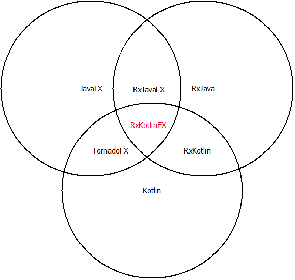

我为何早先于你学习并应用Kotlin
一、说在前面
在 Google IO 大会后，Kotlin 马上成为各个群里最火热的话题！一时间， Kotlin QQ 群， Kotlin 微信群， Kotlin 公众号， Kotlin 参考文档……瞬间爆炸！是啊，谁让谷歌钦定了呢？讯息大爆炸之后是大家争先恐后抓住时间赶上潮流：了解新技术，准备学习新技术，找志同道合的同志（ :joy: ），为什么不呢？不行动就会落后，落后就要挨打，挨打打屁股。 :joy:
但是，话锋一转，我想问的是，作为 Java or Android 开发技术人员的你，为什么才开始学习 Kotlin ，或者甚至夸张地才了解到 Kotlin 这个单词？其实，非科班出生的我早已经在 Kotlin 1.0 版本发布之后的不久就开始学习并使用上了，什么都比你晚，但是今天我第一次感觉自己站在了更高的位置（应该摔得更疼），或许我们应该是时候改变一下自己因循守旧的思维模式了，那么就这个话题，以下将展示仅本人个人的观点论断！注：前方非高能，高手们请再会。 :joy:
二、我的做法
非科班出身，也非技术大牛，无实战经验，可以说我是技术小渣渣。为啥我还能大言不惭？其实并不是说我技术功底有多厚，而是我提前了解了一些大家视而不见或者未曾了解的东西，因此显得我比你捷足先登了一步，尽管大牛们学习之后理论和实战都要比我厉害，不过谁知道以后还会不会出现程序潮流界类似改朝换代的时刻而你继续错过呢？未然。我想表达的思路从下载一个 APP 开始。
1. 首先说说我是怎么下载简书APP的
在我们学习或者开发过程中遇到问题时总会进行百度或者 Google 搜索，我去年下半年开始自学编程，记得当时做一个辅助软件时，我百度找了很多相关技术文章，最先了解到的是发现一批 CSDN 上的博客，很多技术大牛做的技术分享，顺其自然地我就在手机上下载了 CSDN 这个 APP，但是这个软件有个致命 BUG ：居然不能搜索（现在新版本已经解决），另外文章排版也不是特别舒服导致阅读体验不是很好，对于我来说这就显得不是那么友好了。然后我在网页上找到了其他好几篇不错的文章，同时令人满意的是排版也非常友好，对，就是它：简书。我能估计 99.99% 的程序员都知道【简书】这个 APP ，但是对于门外汉的我来说确是酒逢知己一般，顺势在手机上下载了这个软件。在之后的日子里，利用手机通过搜索找到了不少学习材料，一直到现在我都很喜欢在简书上搜索某些方面的技术文章，当然我现在也安装了掘金 APP 和其他一些软件。
2. 我是如何了解到 Kotlin 的？
为什么要说简书这个普普通通的 APP 呢？因为：搜索真的很重要！去年的我被一款叫做 Unity3D 的游戏开发软件吸引住而开始打算自学编程应用。这个软件使用的脚本是 C# ，我以前上大学的时候有点 Java 基础，初学问题不算太大。恰逢其时，我同学叫我帮忙弄个微信聊天功能辅助小软件，算桌面 GUI 程序，我当时感觉可以自己做，便拿来作为自己的练手项目，直接用 Java 就开始搞起来了。不得不说 Java 还是很难的，弄了个把月也没做出来什么，倒是学习了不少新知识，与此同时我找到了 JavaFX ，你眼里的老技术对我来说确是焕然一新啊。在不断遇到问题解决问题的过程中，一个叫 TornadoFX 的开源项目走进我的视线： Lightweight JavaFX Framework for Kotlin ，不就是用其他语言实现的 JavaFX 吗？我为啥就关注它了呢？那是因为： GitBooks ！是的，当其他的 JavaFX 参考文件都只有官方那苍白无力的文档的时候， TornadoFX 有 PDF 甚至 Mobi 、 ePub 手机版的详细阅读资料，我下载到手机里，如饥似渴地阅读起来，在感受 Kotlin 魅力的同时尝试使用着 TornadoFX 的强大！
3. 怎样高效学习 Kotlin 呢？
对于很多人来说，为了一个开源库而学习一门新的语言完全不值！刚开始我也这样认为，后面我发现新语言的新特性让我能用少量代码写出更优雅的程序，我立马下定决心学习 Kotlin ，在学习之前我还搜索了与 JVM 相关的其他语言，包括： Scala 、 Groovy 、 Clojure ，我觉得学习一门语言就应该有所比较，对它的历史也要有点认知，相比强大的 Scala ， Kotlin 的学习曲线很缓，适合新手的我！这期间，我的第一步就是下载 Kotlin 官方 PDF 文档，看完后找到了一本适合中国国情的好书：《 Programming Kotlin 》，我算是入门了。之后 TornadoFX 的文档我看了三遍，边看边用，边用边学，边学边想，最大化的理解和消化这些新知识。对了，学习一门语言，我不看视频，我觉得那是一种浪费时间的表现。
4. 为什么我起步晚但学习 Kotlin 却比有些人早？
是偶然吗？我看未必。曾今我做过服装相关的行业，接触到服装行业的业内人士就知道，服装的流行元素首先是从国外流传到台湾的，然后再从台湾到香港，慢慢的，香港那边开始传播到了内陆。技术行业其实也不例外，如同服装流行元素一样，如果你想掌握先机的话，你必须先去国外了解最新的相关行业动态。怎么了解？还是搜索！而且要用英语搜索！我很喜欢用英文搜索，虽然之前也属于翻墙一员，但是能力有限不能解决 Chrome 上奇怪的 500 internal server error 而不能愉快地进行 Google 搜索，但是我用起了百度英文搜索！那句“您可以仅查看：英文结果”的话总是让我忍不住一点。同时，我在用 Google 搜索文章并阅读后总能额外了解到一些新知识，虽然是浅尝辄止，但并不影响我对新生事物的初识：我不会放过好文章中的一些专有名词以及相关技术。曾今我在 TornadoFX 的 Gitbooks 中的一段话中我就同时了解到了 ControlsFX ， JFXtras ， ReactFX ， RxJavaFX ， RxKotlin ， RxKotlinFX 这些专业技术的概念和存在：

TornadoFX:
It can work in conjunction with other popular JavaFX libraries such as ControlsFX and JFXtras. It works especially well with reactive frameworks such as ReactFX as well as RxJava and friends (including RxJavaFX, RxKotlin, and RxKotlinFX.
5. 我们需要勇于做一些尝试
作为一位入门级“大师”，我并没有资格教大家如何学习，但是我却发现了不少人思维的局限性。我很赞同安卓大神 stormzhang 的一个理念：如果是好文章，他肯定会逐字逐句看完并理解到位，并不是收藏起来之后阅读！对于我们大部分人来说，收藏有那么点自欺欺人的意思。我们也经常看到有人说：新语言坑太多了，填都填不过来！又或者：先瞧一瞧吧，万事初生三分热，等过了再看！（而之后一直没看）还有甚者：新版本出来旧版本全挂，尝试新的就是找死！……我们会被这种理所当然的赞同思维所影响，不知不觉的顺从了“有的人”的想法和行动。其实，给自己一点时间，给自己一点勇气，认识自己，审视过去，改变自己，尝试一下，去探索新的世界，说不定就能感受到更加新鲜的空气呢？记得几个月前我尝试第一次采用英语在 StackOverFlow 上求助一问题，那是我第一次用英语公开表达，而意想不到的是被相关主题作者回复并采纳到新功能更新中，我也为自己感到惊奇，哈哈！
TornadoFX [Change Log]
[1.7.0] - 2017-03-04
EventBus subscribe(times = n) parameter will unregister listener after it has fired n times (http://stackoverflow.com/questions/42465786/how-to-unsubscribe-events-in-tornadofx)
6. 那么是技多不压身还是贪多嚼不烂？
“技术多而不深则罔，技术虽少而精则怠，技术多而深则通啊”！再说安卓界大牛 stormzhang 的一段分享主题：“为什么你觉得自己还达不到高级的标准”，他的观点很明确：你没有一个擅长的领域！是的，技多不压身，但是你就是不能跑在别人前面，问问我们自己：我擅长什么？我有什么厉害之处？我们为什么不精通某一个方向？何乐而不为啊！话又说回来，在时间资源非常紧缺的现代社会里，贪多而嚼不烂的想法自然占据了很多人的心理。我们疲于工作，忙于应酬，还有家事：房子、车子、老婆孩子……哪有时间掌握多门手艺？精通一门足矣。我也是这么认为的，但是，但是，但是，自从我在一个博客上看到一位老师既能用多种 3D 软件设计又能吉他弹奏，又看到一位魔术大师既是演员又能弹吉他还能编程后，我觉得，有时候我们更应该跳出思维的圈子，改变一下自己的思维方式。技多不深不可取，技少但精也别骄，技多且精最可贵！题目来自这篇文章：
简书 cleverfan 的文章：
重新认识java（零） — 不积跬步无以至千里： http://www.jianshu.com/p/21b67448b286
三、最后
是不是感觉又上了一课？哈哈，我等小菜又有何德何能啊？！话又说回来，最近一个新闻：华为 35 岁员工被辞，貌似要验证我同学在 5 年前的一个预测，他的大意是：相当一部分人在 40 岁左右会被公司辞退！！！理由很简单：公司不愿意用不断提升工资的方式来保留一位老员工而更愿意用更少的金钱加一点点培训经费雇佣一位能做同样复制工作的年轻员工！简单，暴力，而充分！ :cold_sweat:
参考资料：
TornadoFX Guide: https://edvin.gitbooks.io/tornadofx-guide/content/1.%20Why%20TornadoFX.html
Kotlin Reference: http://kotlinlang.org/docs/reference/
stormzhang (blog): http://stormzhang.com/